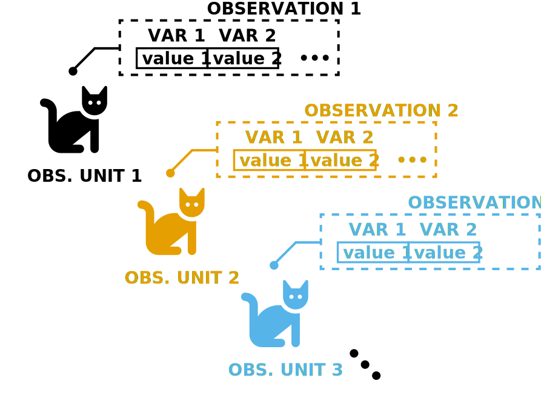
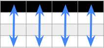
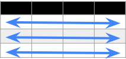
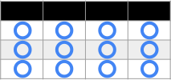
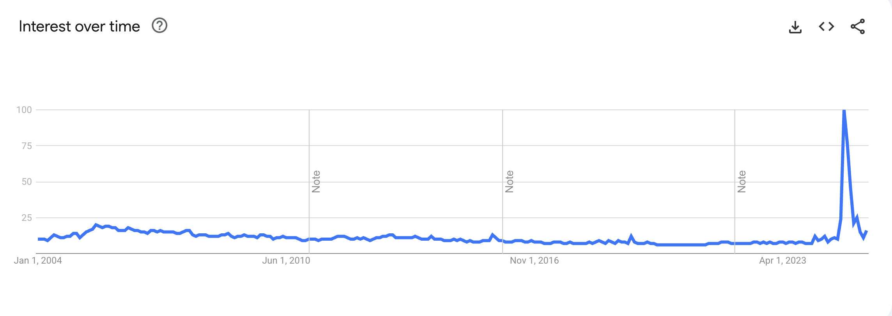
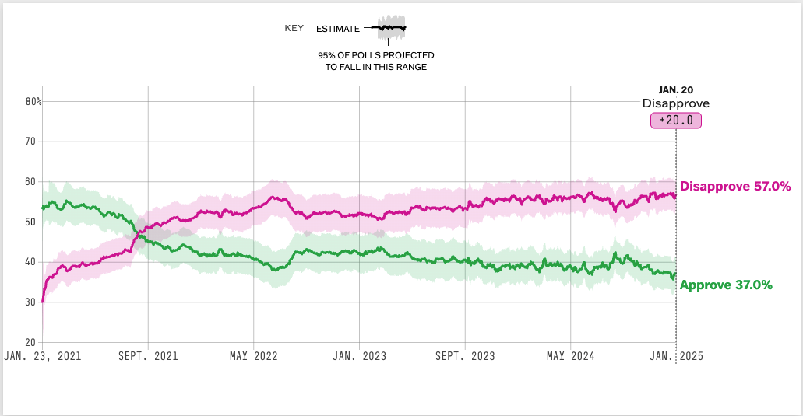
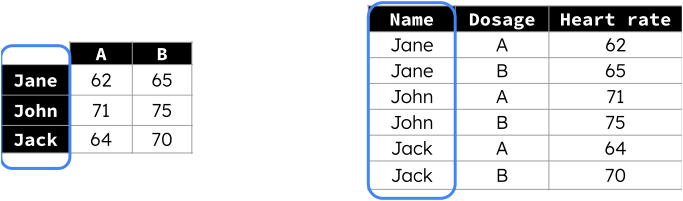
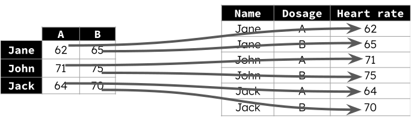
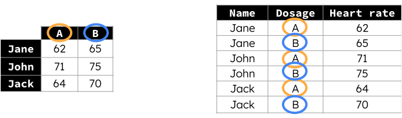

Course Title S25 W25 F24 M24 S24 W24 F23 M23 S23 W23 F22
PSTAT 5A UNDERSTANDING DATA 167 222 213 76 258 283 549 110 212 279 499
PSTAT 5H STATISTICS 11 14 30 NA 31 24 25 NA 31 22 4
PSTAT 5LS STAT LIFE SCIENCES 355 340 348 59 304 299 NA 39 299 294 NA
PSTAT 8 TRANS DS PROB STAT 70 105 137 22 83 134 132 18 86 156 70
PSTAT 10 DATA SCIENCE PRINC 235 241 286 93 234 260 285 83 240 282 257
PSTAT 99 INDEPENDENT STUDIES 1 2 NA NA NA NA NA NA NA NA NA
PSTAT 100 DS_CONC&ANLS 109 131 108 NA 95 NA 104 48 125 127 NA
PSTAT 105 INTRO N-PARAM METH NA 79 NA NA NA NA 39 NA NA NA 79
PSTAT 109 STATISTICS FOR ECON NA NA NA NA NA NA NA NA NA NA NA
PSTAT 115 BAYES DATA ANALYSIS 81 56 74 25 74 96 16 15 38 70 63
PSTAT 120A PROB & STATISTICS 310 383 345 75 367 372 419 86 237 246 419
PSTAT 120B PROB & STATISTICS 312 329 236 136 382 241 261 102 256 256 165
PSTAT 120C PROB & STATISTICS 163 NA 37 129 131 39 19 81 65 31 87
PSTAT 122 DESIGN OF EXPERMNTS 240 210 201 NA 177 162 167 NA 194 187 182
PSTAT 123 SAMPLING TECHNIQUE NA NA NA NA NA 137 NA NA NA NA NA
PSTAT 126 REGRESSION ANALYSIS 197 214 272 94 147 200 123 84 149 175 182
PSTAT 127 ADV STATS MODELS NA NA 72 NA NA NA 57 NA NA 73 NA
PSTAT 130 SAS BASE PROGRAM 116 120 121 108 122 97 120 95 119 98 97
PSTAT 131 STAT MACHINE LEARN 96 156 64 80 93 138 150 55 108 197 178
PSTAT 132 DATABASES FOR STATS NA NA NA NA NA NA NA NA NA NA NA
PSTAT 134 STAT DATA SCIENCE 46 91 78 NA 70 78 80 NA 87 42 33
PSTAT 135 BIG DATA ANALYTICS 96 NA NA NA NA 99 NA NA NA 93 NA
PSTAT 140 STATISTICAL PROCESS NA NA NA NA NA NA NA NA NA NA NA
PSTAT 160A STOCHASTIC PROCESS 132 217 126 NA 100 153 132 NA 108 161 184
PSTAT 160B STOCHASTIC PROCESS 116 77 86 NA 106 73 43 7 82 81 58
PSTAT 170 INTRO MATH FINANCE 116 65 92 19 125 65 59 17 77 57 55
PSTAT 171 MATH COMPOUND INT 73 77 96 47 84 68 102 32 64 69 108
PSTAT 172A ACTUARIAL STAT I NA 49 NA NA NA 60 NA NA NA 43 NA
PSTAT 172B ACTUARIAL STAT II 14 NA NA NA 20 NA NA NA 23 NA NA
PSTAT 173 RISK THEORY NA NA 64 NA NA NA 35 NA NA NA 43
PSTAT 174 TIME SERIES NA 89 83 NA 104 63 NA NA 170 118 69
PSTAT 175 SURVIVAL ANALYSIS 71 NA NA NA 55 NA 18 NA NA NA 73
PSTAT 176 ADV MATH FINANCE 17 NA NA NA 15 NA NA NA 13 NA NA
PSTAT 177 FINANCIAL RISK 31 NA NA NA NA NA NA NA NA NA NA
PSTAT 182T ACTUARIAL TUTORIAL 12 20 15 NA 17 6 4 NA 6 4 7
PSTAT 183 ACTUARIAL CONCEPTS 28 NA NA NA 44 NA NA NA 46 NA NA
PSTAT 190 ULA TRAINING NA NA 14 NA NA NA 5 NA NA NA 20
PSTAT 191 ULA PRACTICUM NA NA NA NA NA NA NA NA NA NA NA
PSTAT 193 INTERNSHIP IN STATS 4 3 4 28 6 4 8 20 6 3 2
PSTAT 194 GRP STDY ADV STDNT NA NA NA 11 29 NA NA NA 28 NA NA
PSTAT 195 SPECIAL TOPICS NA NA NA NA NA NA NA NA NA NA NA
PSTAT 196 RESEARCH IN ACTSC NA NA NA NA NA NA NA NA NA NA NA
PSTAT 197A DS CAPSTONE PREP NA NA 59 NA NA NA 58 NA NA NA 59
PSTAT 197B DS CAPSTONE PROJECT NA 58 NA NA NA 56 NA NA NA 53 NA
PSTAT 197C DS CAPSTONE PROJECT 52 NA NA NA 53 NA NA NA 46 NA NA
PSTAT 199 INDEPENDENT STUDIES 23 22 18 6 19 17 23 6 21 17 21
PSTAT 199RA INDEP RESEARCH ASST NA NA NA NA NA NA NA NA NA NA NA
M22 S22 W22
116 194 278
NA NA NA
63 294 284
23 59 NA
87 278 287
NA NA NA
NA 95 88
NA NA 93
NA NA NA
NA NA 81
65 244 229
174 216 241
109 119 NA
NA 137 119
NA NA NA
67 250 123
NA 78 91
138 122 98
NA 75 76
NA NA NA
22 NA 66
NA NA NA
NA NA NA
51 130 77
54 109 72
41 74 69
49 70 68
NA NA 60
NA 26 NA
NA NA 50
NA 61 74
NA NA NA
NA 15 NA
NA NA NA
NA 12 5
NA 68 NA
NA NA NA
NA NA NA
35 5 4
NA 66 NA
NA NA NA
NA NA NA
NA NA NA
NA NA 46
NA 47 NA
10 19 5
NA NA NAPSTAT 100: Lecture 02
Data Structure, and Tidy Data
Ethan P. Marzban
Department of Statistics and Applied Probability; UCSB
Summer Session A, 2025
Review: Data Semantics
Definition
Definition: Data
We define an observation to be a collection of values measured on certain attributes (aka variables). From a semantic standpoint, we define data to be a collection of observations collected on observational units.
Review: Data Semantics
Another Illustration

Review: Course Enrollments Dataset
Some Sample Observations
- The enrollment for PSTAT 5A, titled “Understanding Data,” was 167 in Spring 2025
- The enrollment for PSTAT 5A, titled “Understanding Data,” was 222 in Winter 2025
- The enrollment for PSTAT 5H, titled “Statistics,” was 11 in Spring 2025
Course Title Quarter Enrollment
PSTAT 5A UNDERSTANDING DATA S25 167
PSTAT 5H STATISTICS S25 11
PSTAT 5LS STAT LIFE SCIENCES S25 355
PSTAT 8 TRANS DS PROB STAT S25 70
PSTAT 10 DATA SCIENCE PRINC S25 235
PSTAT 99 INDEPENDENT STUDIES S25 1
PSTAT 100 DS_CONC&ANLS S25 109
PSTAT 105 INTRO N-PARAM METH S25 NA
PSTAT 109 STATISTICS FOR ECON S25 NA
PSTAT 115 BAYES DATA ANALYSIS S25 81
PSTAT 120A PROB & STATISTICS S25 310
PSTAT 120B PROB & STATISTICS S25 312
PSTAT 120C PROB & STATISTICS S25 163
PSTAT 122 DESIGN OF EXPERMNTS S25 240
PSTAT 123 SAMPLING TECHNIQUE S25 NA
PSTAT 126 REGRESSION ANALYSIS S25 197
PSTAT 127 ADV STATS MODELS S25 NA
PSTAT 130 SAS BASE PROGRAM S25 116
PSTAT 131 STAT MACHINE LEARN S25 96
PSTAT 132 DATABASES FOR STATS S25 NA
PSTAT 134 STAT DATA SCIENCE S25 46
PSTAT 135 BIG DATA ANALYTICS S25 96
PSTAT 140 STATISTICAL PROCESS S25 NA
PSTAT 160A STOCHASTIC PROCESS S25 132
PSTAT 160B STOCHASTIC PROCESS S25 116
PSTAT 170 INTRO MATH FINANCE S25 116
PSTAT 171 MATH COMPOUND INT S25 73
PSTAT 172A ACTUARIAL STAT I S25 NA
PSTAT 172B ACTUARIAL STAT II S25 14
PSTAT 173 RISK THEORY S25 NA
PSTAT 174 TIME SERIES S25 NA
PSTAT 175 SURVIVAL ANALYSIS S25 71
PSTAT 176 ADV MATH FINANCE S25 17
PSTAT 177 FINANCIAL RISK S25 31
PSTAT 182T ACTUARIAL TUTORIAL S25 12
PSTAT 183 ACTUARIAL CONCEPTS S25 28
PSTAT 190 ULA TRAINING S25 NA
PSTAT 191 ULA PRACTICUM S25 NA
PSTAT 193 INTERNSHIP IN STATS S25 4
PSTAT 194 GRP STDY ADV STDNT S25 NA
PSTAT 195 SPECIAL TOPICS S25 NA
PSTAT 196 RESEARCH IN ACTSC S25 NA
PSTAT 197A DS CAPSTONE PREP S25 NA
PSTAT 197B DS CAPSTONE PROJECT S25 NA
PSTAT 197C DS CAPSTONE PROJECT S25 52
PSTAT 199 INDEPENDENT STUDIES S25 23
PSTAT 199RA INDEP RESEARCH ASST S25 NA
PSTAT 5A UNDERSTANDING DATA W25 222
PSTAT 5H STATISTICS W25 14
PSTAT 5LS STAT LIFE SCIENCES W25 340
PSTAT 8 TRANS DS PROB STAT W25 105
PSTAT 10 DATA SCIENCE PRINC W25 241
PSTAT 99 INDEPENDENT STUDIES W25 2
PSTAT 100 DS_CONC&ANLS W25 131
PSTAT 105 INTRO N-PARAM METH W25 79
PSTAT 109 STATISTICS FOR ECON W25 NA
PSTAT 115 BAYES DATA ANALYSIS W25 56
PSTAT 120A PROB & STATISTICS W25 383
PSTAT 120B PROB & STATISTICS W25 329
PSTAT 120C PROB & STATISTICS W25 NA
PSTAT 122 DESIGN OF EXPERMNTS W25 210
PSTAT 123 SAMPLING TECHNIQUE W25 NA
PSTAT 126 REGRESSION ANALYSIS W25 214
PSTAT 127 ADV STATS MODELS W25 NA
PSTAT 130 SAS BASE PROGRAM W25 120
PSTAT 131 STAT MACHINE LEARN W25 156
PSTAT 132 DATABASES FOR STATS W25 NA
PSTAT 134 STAT DATA SCIENCE W25 91
PSTAT 135 BIG DATA ANALYTICS W25 NA
PSTAT 140 STATISTICAL PROCESS W25 NA
PSTAT 160A STOCHASTIC PROCESS W25 217
PSTAT 160B STOCHASTIC PROCESS W25 77
PSTAT 170 INTRO MATH FINANCE W25 65
PSTAT 171 MATH COMPOUND INT W25 77
PSTAT 172A ACTUARIAL STAT I W25 49
PSTAT 172B ACTUARIAL STAT II W25 NA
PSTAT 173 RISK THEORY W25 NA
PSTAT 174 TIME SERIES W25 89
PSTAT 175 SURVIVAL ANALYSIS W25 NA
PSTAT 176 ADV MATH FINANCE W25 NA
PSTAT 177 FINANCIAL RISK W25 NA
PSTAT 182T ACTUARIAL TUTORIAL W25 20
PSTAT 183 ACTUARIAL CONCEPTS W25 NA
PSTAT 190 ULA TRAINING W25 NA
PSTAT 191 ULA PRACTICUM W25 NA
PSTAT 193 INTERNSHIP IN STATS W25 3
PSTAT 194 GRP STDY ADV STDNT W25 NA
PSTAT 195 SPECIAL TOPICS W25 NA
PSTAT 196 RESEARCH IN ACTSC W25 NA
PSTAT 197A DS CAPSTONE PREP W25 NA
PSTAT 197B DS CAPSTONE PROJECT W25 58
PSTAT 197C DS CAPSTONE PROJECT W25 NA
PSTAT 199 INDEPENDENT STUDIES W25 22
PSTAT 199RA INDEP RESEARCH ASST W25 NA
PSTAT 5A UNDERSTANDING DATA F24 213
PSTAT 5H STATISTICS F24 30
PSTAT 5LS STAT LIFE SCIENCES F24 348
PSTAT 8 TRANS DS PROB STAT F24 137
PSTAT 10 DATA SCIENCE PRINC F24 286
PSTAT 99 INDEPENDENT STUDIES F24 NA
PSTAT 100 DS_CONC&ANLS F24 108
PSTAT 105 INTRO N-PARAM METH F24 NA
PSTAT 109 STATISTICS FOR ECON F24 NA
PSTAT 115 BAYES DATA ANALYSIS F24 74
PSTAT 120A PROB & STATISTICS F24 345
PSTAT 120B PROB & STATISTICS F24 236
PSTAT 120C PROB & STATISTICS F24 37
PSTAT 122 DESIGN OF EXPERMNTS F24 201
PSTAT 123 SAMPLING TECHNIQUE F24 NA
PSTAT 126 REGRESSION ANALYSIS F24 272
PSTAT 127 ADV STATS MODELS F24 72
PSTAT 130 SAS BASE PROGRAM F24 121
PSTAT 131 STAT MACHINE LEARN F24 64
PSTAT 132 DATABASES FOR STATS F24 NA
PSTAT 134 STAT DATA SCIENCE F24 78
PSTAT 135 BIG DATA ANALYTICS F24 NA
PSTAT 140 STATISTICAL PROCESS F24 NA
PSTAT 160A STOCHASTIC PROCESS F24 126
PSTAT 160B STOCHASTIC PROCESS F24 86
PSTAT 170 INTRO MATH FINANCE F24 92
PSTAT 171 MATH COMPOUND INT F24 96
PSTAT 172A ACTUARIAL STAT I F24 NA
PSTAT 172B ACTUARIAL STAT II F24 NA
PSTAT 173 RISK THEORY F24 64
PSTAT 174 TIME SERIES F24 83
PSTAT 175 SURVIVAL ANALYSIS F24 NA
PSTAT 176 ADV MATH FINANCE F24 NA
PSTAT 177 FINANCIAL RISK F24 NA
PSTAT 182T ACTUARIAL TUTORIAL F24 15
PSTAT 183 ACTUARIAL CONCEPTS F24 NA
PSTAT 190 ULA TRAINING F24 14
PSTAT 191 ULA PRACTICUM F24 NA
PSTAT 193 INTERNSHIP IN STATS F24 4
PSTAT 194 GRP STDY ADV STDNT F24 NA
PSTAT 195 SPECIAL TOPICS F24 NA
PSTAT 196 RESEARCH IN ACTSC F24 NA
PSTAT 197A DS CAPSTONE PREP F24 59
PSTAT 197B DS CAPSTONE PROJECT F24 NA
PSTAT 197C DS CAPSTONE PROJECT F24 NA
PSTAT 199 INDEPENDENT STUDIES F24 18
PSTAT 199RA INDEP RESEARCH ASST F24 NA
PSTAT 5A UNDERSTANDING DATA M24 76
PSTAT 5H STATISTICS M24 NA
PSTAT 5LS STAT LIFE SCIENCES M24 59
PSTAT 8 TRANS DS PROB STAT M24 22
PSTAT 10 DATA SCIENCE PRINC M24 93
PSTAT 99 INDEPENDENT STUDIES M24 NA
PSTAT 100 DS_CONC&ANLS M24 NA
PSTAT 105 INTRO N-PARAM METH M24 NA
PSTAT 109 STATISTICS FOR ECON M24 NA
PSTAT 115 BAYES DATA ANALYSIS M24 25
PSTAT 120A PROB & STATISTICS M24 75
PSTAT 120B PROB & STATISTICS M24 136
PSTAT 120C PROB & STATISTICS M24 129
PSTAT 122 DESIGN OF EXPERMNTS M24 NA
PSTAT 123 SAMPLING TECHNIQUE M24 NA
PSTAT 126 REGRESSION ANALYSIS M24 94
PSTAT 127 ADV STATS MODELS M24 NA
PSTAT 130 SAS BASE PROGRAM M24 108
PSTAT 131 STAT MACHINE LEARN M24 80
PSTAT 132 DATABASES FOR STATS M24 NA
PSTAT 134 STAT DATA SCIENCE M24 NA
PSTAT 135 BIG DATA ANALYTICS M24 NA
PSTAT 140 STATISTICAL PROCESS M24 NA
PSTAT 160A STOCHASTIC PROCESS M24 NA
PSTAT 160B STOCHASTIC PROCESS M24 NA
PSTAT 170 INTRO MATH FINANCE M24 19
PSTAT 171 MATH COMPOUND INT M24 47
PSTAT 172A ACTUARIAL STAT I M24 NA
PSTAT 172B ACTUARIAL STAT II M24 NA
PSTAT 173 RISK THEORY M24 NA
PSTAT 174 TIME SERIES M24 NA
PSTAT 175 SURVIVAL ANALYSIS M24 NA
PSTAT 176 ADV MATH FINANCE M24 NA
PSTAT 177 FINANCIAL RISK M24 NA
PSTAT 182T ACTUARIAL TUTORIAL M24 NA
PSTAT 183 ACTUARIAL CONCEPTS M24 NA
PSTAT 190 ULA TRAINING M24 NA
PSTAT 191 ULA PRACTICUM M24 NA
PSTAT 193 INTERNSHIP IN STATS M24 28
PSTAT 194 GRP STDY ADV STDNT M24 11
PSTAT 195 SPECIAL TOPICS M24 NA
PSTAT 196 RESEARCH IN ACTSC M24 NA
PSTAT 197A DS CAPSTONE PREP M24 NA
PSTAT 197B DS CAPSTONE PROJECT M24 NA
PSTAT 197C DS CAPSTONE PROJECT M24 NA
PSTAT 199 INDEPENDENT STUDIES M24 6
PSTAT 199RA INDEP RESEARCH ASST M24 NA
PSTAT 5A UNDERSTANDING DATA S24 258
PSTAT 5H STATISTICS S24 31
PSTAT 5LS STAT LIFE SCIENCES S24 304
PSTAT 8 TRANS DS PROB STAT S24 83
PSTAT 10 DATA SCIENCE PRINC S24 234
PSTAT 99 INDEPENDENT STUDIES S24 NA
PSTAT 100 DS_CONC&ANLS S24 95
PSTAT 105 INTRO N-PARAM METH S24 NA
PSTAT 109 STATISTICS FOR ECON S24 NA
PSTAT 115 BAYES DATA ANALYSIS S24 74
PSTAT 120A PROB & STATISTICS S24 367
PSTAT 120B PROB & STATISTICS S24 382
PSTAT 120C PROB & STATISTICS S24 131
PSTAT 122 DESIGN OF EXPERMNTS S24 177
PSTAT 123 SAMPLING TECHNIQUE S24 NA
PSTAT 126 REGRESSION ANALYSIS S24 147
PSTAT 127 ADV STATS MODELS S24 NA
PSTAT 130 SAS BASE PROGRAM S24 122
PSTAT 131 STAT MACHINE LEARN S24 93
PSTAT 132 DATABASES FOR STATS S24 NA
PSTAT 134 STAT DATA SCIENCE S24 70
PSTAT 135 BIG DATA ANALYTICS S24 NA
PSTAT 140 STATISTICAL PROCESS S24 NA
PSTAT 160A STOCHASTIC PROCESS S24 100
PSTAT 160B STOCHASTIC PROCESS S24 106
PSTAT 170 INTRO MATH FINANCE S24 125
PSTAT 171 MATH COMPOUND INT S24 84
PSTAT 172A ACTUARIAL STAT I S24 NA
PSTAT 172B ACTUARIAL STAT II S24 20
PSTAT 173 RISK THEORY S24 NA
PSTAT 174 TIME SERIES S24 104
PSTAT 175 SURVIVAL ANALYSIS S24 55
PSTAT 176 ADV MATH FINANCE S24 15
PSTAT 177 FINANCIAL RISK S24 NA
PSTAT 182T ACTUARIAL TUTORIAL S24 17
PSTAT 183 ACTUARIAL CONCEPTS S24 44
PSTAT 190 ULA TRAINING S24 NA
PSTAT 191 ULA PRACTICUM S24 NA
PSTAT 193 INTERNSHIP IN STATS S24 6
PSTAT 194 GRP STDY ADV STDNT S24 29
PSTAT 195 SPECIAL TOPICS S24 NA
PSTAT 196 RESEARCH IN ACTSC S24 NA
PSTAT 197A DS CAPSTONE PREP S24 NA
PSTAT 197B DS CAPSTONE PROJECT S24 NA
PSTAT 197C DS CAPSTONE PROJECT S24 53
PSTAT 199 INDEPENDENT STUDIES S24 19
PSTAT 199RA INDEP RESEARCH ASST S24 NA
PSTAT 5A UNDERSTANDING DATA W24 283
PSTAT 5H STATISTICS W24 24
PSTAT 5LS STAT LIFE SCIENCES W24 299
PSTAT 8 TRANS DS PROB STAT W24 134
PSTAT 10 DATA SCIENCE PRINC W24 260
PSTAT 99 INDEPENDENT STUDIES W24 NA
PSTAT 100 DS_CONC&ANLS W24 NA
PSTAT 105 INTRO N-PARAM METH W24 NA
PSTAT 109 STATISTICS FOR ECON W24 NA
PSTAT 115 BAYES DATA ANALYSIS W24 96
PSTAT 120A PROB & STATISTICS W24 372
PSTAT 120B PROB & STATISTICS W24 241
PSTAT 120C PROB & STATISTICS W24 39
PSTAT 122 DESIGN OF EXPERMNTS W24 162
PSTAT 123 SAMPLING TECHNIQUE W24 137
PSTAT 126 REGRESSION ANALYSIS W24 200
PSTAT 127 ADV STATS MODELS W24 NA
PSTAT 130 SAS BASE PROGRAM W24 97
PSTAT 131 STAT MACHINE LEARN W24 138
PSTAT 132 DATABASES FOR STATS W24 NA
PSTAT 134 STAT DATA SCIENCE W24 78
PSTAT 135 BIG DATA ANALYTICS W24 99
PSTAT 140 STATISTICAL PROCESS W24 NA
PSTAT 160A STOCHASTIC PROCESS W24 153
PSTAT 160B STOCHASTIC PROCESS W24 73
PSTAT 170 INTRO MATH FINANCE W24 65
PSTAT 171 MATH COMPOUND INT W24 68
PSTAT 172A ACTUARIAL STAT I W24 60
PSTAT 172B ACTUARIAL STAT II W24 NA
PSTAT 173 RISK THEORY W24 NA
PSTAT 174 TIME SERIES W24 63
PSTAT 175 SURVIVAL ANALYSIS W24 NA
PSTAT 176 ADV MATH FINANCE W24 NA
PSTAT 177 FINANCIAL RISK W24 NA
PSTAT 182T ACTUARIAL TUTORIAL W24 6
PSTAT 183 ACTUARIAL CONCEPTS W24 NA
PSTAT 190 ULA TRAINING W24 NA
PSTAT 191 ULA PRACTICUM W24 NA
PSTAT 193 INTERNSHIP IN STATS W24 4
PSTAT 194 GRP STDY ADV STDNT W24 NA
PSTAT 195 SPECIAL TOPICS W24 NA
PSTAT 196 RESEARCH IN ACTSC W24 NA
PSTAT 197A DS CAPSTONE PREP W24 NA
PSTAT 197B DS CAPSTONE PROJECT W24 56
PSTAT 197C DS CAPSTONE PROJECT W24 NA
PSTAT 199 INDEPENDENT STUDIES W24 17
PSTAT 199RA INDEP RESEARCH ASST W24 NA
PSTAT 5A UNDERSTANDING DATA F23 549
PSTAT 5H STATISTICS F23 25
PSTAT 5LS STAT LIFE SCIENCES F23 NA
PSTAT 8 TRANS DS PROB STAT F23 132
PSTAT 10 DATA SCIENCE PRINC F23 285
PSTAT 99 INDEPENDENT STUDIES F23 NA
PSTAT 100 DS_CONC&ANLS F23 104
PSTAT 105 INTRO N-PARAM METH F23 39
PSTAT 109 STATISTICS FOR ECON F23 NA
PSTAT 115 BAYES DATA ANALYSIS F23 16
PSTAT 120A PROB & STATISTICS F23 419
PSTAT 120B PROB & STATISTICS F23 261
PSTAT 120C PROB & STATISTICS F23 19
PSTAT 122 DESIGN OF EXPERMNTS F23 167
PSTAT 123 SAMPLING TECHNIQUE F23 NA
PSTAT 126 REGRESSION ANALYSIS F23 123
PSTAT 127 ADV STATS MODELS F23 57
PSTAT 130 SAS BASE PROGRAM F23 120
PSTAT 131 STAT MACHINE LEARN F23 150
PSTAT 132 DATABASES FOR STATS F23 NA
PSTAT 134 STAT DATA SCIENCE F23 80
PSTAT 135 BIG DATA ANALYTICS F23 NA
PSTAT 140 STATISTICAL PROCESS F23 NA
PSTAT 160A STOCHASTIC PROCESS F23 132
PSTAT 160B STOCHASTIC PROCESS F23 43
PSTAT 170 INTRO MATH FINANCE F23 59
PSTAT 171 MATH COMPOUND INT F23 102
PSTAT 172A ACTUARIAL STAT I F23 NA
PSTAT 172B ACTUARIAL STAT II F23 NA
PSTAT 173 RISK THEORY F23 35
PSTAT 174 TIME SERIES F23 NA
PSTAT 175 SURVIVAL ANALYSIS F23 18
PSTAT 176 ADV MATH FINANCE F23 NA
PSTAT 177 FINANCIAL RISK F23 NA
PSTAT 182T ACTUARIAL TUTORIAL F23 4
PSTAT 183 ACTUARIAL CONCEPTS F23 NA
PSTAT 190 ULA TRAINING F23 5
PSTAT 191 ULA PRACTICUM F23 NA
PSTAT 193 INTERNSHIP IN STATS F23 8
PSTAT 194 GRP STDY ADV STDNT F23 NA
PSTAT 195 SPECIAL TOPICS F23 NA
PSTAT 196 RESEARCH IN ACTSC F23 NA
PSTAT 197A DS CAPSTONE PREP F23 58
PSTAT 197B DS CAPSTONE PROJECT F23 NA
PSTAT 197C DS CAPSTONE PROJECT F23 NA
PSTAT 199 INDEPENDENT STUDIES F23 23
PSTAT 199RA INDEP RESEARCH ASST F23 NA
PSTAT 5A UNDERSTANDING DATA M23 110
PSTAT 5H STATISTICS M23 NA
PSTAT 5LS STAT LIFE SCIENCES M23 39
PSTAT 8 TRANS DS PROB STAT M23 18
PSTAT 10 DATA SCIENCE PRINC M23 83
PSTAT 99 INDEPENDENT STUDIES M23 NA
PSTAT 100 DS_CONC&ANLS M23 48
PSTAT 105 INTRO N-PARAM METH M23 NA
PSTAT 109 STATISTICS FOR ECON M23 NA
PSTAT 115 BAYES DATA ANALYSIS M23 15
PSTAT 120A PROB & STATISTICS M23 86
PSTAT 120B PROB & STATISTICS M23 102
PSTAT 120C PROB & STATISTICS M23 81
PSTAT 122 DESIGN OF EXPERMNTS M23 NA
PSTAT 123 SAMPLING TECHNIQUE M23 NA
PSTAT 126 REGRESSION ANALYSIS M23 84
PSTAT 127 ADV STATS MODELS M23 NA
PSTAT 130 SAS BASE PROGRAM M23 95
PSTAT 131 STAT MACHINE LEARN M23 55
PSTAT 132 DATABASES FOR STATS M23 NA
PSTAT 134 STAT DATA SCIENCE M23 NA
PSTAT 135 BIG DATA ANALYTICS M23 NA
PSTAT 140 STATISTICAL PROCESS M23 NA
PSTAT 160A STOCHASTIC PROCESS M23 NA
PSTAT 160B STOCHASTIC PROCESS M23 7
PSTAT 170 INTRO MATH FINANCE M23 17
PSTAT 171 MATH COMPOUND INT M23 32
PSTAT 172A ACTUARIAL STAT I M23 NA
PSTAT 172B ACTUARIAL STAT II M23 NA
PSTAT 173 RISK THEORY M23 NA
PSTAT 174 TIME SERIES M23 NA
PSTAT 175 SURVIVAL ANALYSIS M23 NA
PSTAT 176 ADV MATH FINANCE M23 NA
PSTAT 177 FINANCIAL RISK M23 NA
PSTAT 182T ACTUARIAL TUTORIAL M23 NA
PSTAT 183 ACTUARIAL CONCEPTS M23 NA
PSTAT 190 ULA TRAINING M23 NA
PSTAT 191 ULA PRACTICUM M23 NA
PSTAT 193 INTERNSHIP IN STATS M23 20
PSTAT 194 GRP STDY ADV STDNT M23 NA
PSTAT 195 SPECIAL TOPICS M23 NA
PSTAT 196 RESEARCH IN ACTSC M23 NA
PSTAT 197A DS CAPSTONE PREP M23 NA
PSTAT 197B DS CAPSTONE PROJECT M23 NA
PSTAT 197C DS CAPSTONE PROJECT M23 NA
PSTAT 199 INDEPENDENT STUDIES M23 6
PSTAT 199RA INDEP RESEARCH ASST M23 NA
PSTAT 5A UNDERSTANDING DATA S23 212
PSTAT 5H STATISTICS S23 31
PSTAT 5LS STAT LIFE SCIENCES S23 299
PSTAT 8 TRANS DS PROB STAT S23 86
PSTAT 10 DATA SCIENCE PRINC S23 240
PSTAT 99 INDEPENDENT STUDIES S23 NA
PSTAT 100 DS_CONC&ANLS S23 125
PSTAT 105 INTRO N-PARAM METH S23 NA
PSTAT 109 STATISTICS FOR ECON S23 NA
PSTAT 115 BAYES DATA ANALYSIS S23 38
PSTAT 120A PROB & STATISTICS S23 237
PSTAT 120B PROB & STATISTICS S23 256
PSTAT 120C PROB & STATISTICS S23 65
PSTAT 122 DESIGN OF EXPERMNTS S23 194
PSTAT 123 SAMPLING TECHNIQUE S23 NA
PSTAT 126 REGRESSION ANALYSIS S23 149
PSTAT 127 ADV STATS MODELS S23 NA
PSTAT 130 SAS BASE PROGRAM S23 119
PSTAT 131 STAT MACHINE LEARN S23 108
PSTAT 132 DATABASES FOR STATS S23 NA
PSTAT 134 STAT DATA SCIENCE S23 87
PSTAT 135 BIG DATA ANALYTICS S23 NA
PSTAT 140 STATISTICAL PROCESS S23 NA
PSTAT 160A STOCHASTIC PROCESS S23 108
PSTAT 160B STOCHASTIC PROCESS S23 82
PSTAT 170 INTRO MATH FINANCE S23 77
PSTAT 171 MATH COMPOUND INT S23 64
PSTAT 172A ACTUARIAL STAT I S23 NA
PSTAT 172B ACTUARIAL STAT II S23 23
PSTAT 173 RISK THEORY S23 NA
PSTAT 174 TIME SERIES S23 170
PSTAT 175 SURVIVAL ANALYSIS S23 NA
PSTAT 176 ADV MATH FINANCE S23 13
PSTAT 177 FINANCIAL RISK S23 NA
PSTAT 182T ACTUARIAL TUTORIAL S23 6
PSTAT 183 ACTUARIAL CONCEPTS S23 46
PSTAT 190 ULA TRAINING S23 NA
PSTAT 191 ULA PRACTICUM S23 NA
PSTAT 193 INTERNSHIP IN STATS S23 6
PSTAT 194 GRP STDY ADV STDNT S23 28
PSTAT 195 SPECIAL TOPICS S23 NA
PSTAT 196 RESEARCH IN ACTSC S23 NA
PSTAT 197A DS CAPSTONE PREP S23 NA
PSTAT 197B DS CAPSTONE PROJECT S23 NA
PSTAT 197C DS CAPSTONE PROJECT S23 46
PSTAT 199 INDEPENDENT STUDIES S23 21
PSTAT 199RA INDEP RESEARCH ASST S23 NA
PSTAT 5A UNDERSTANDING DATA W23 279
PSTAT 5H STATISTICS W23 22
PSTAT 5LS STAT LIFE SCIENCES W23 294
PSTAT 8 TRANS DS PROB STAT W23 156
PSTAT 10 DATA SCIENCE PRINC W23 282
PSTAT 99 INDEPENDENT STUDIES W23 NA
PSTAT 100 DS_CONC&ANLS W23 127
PSTAT 105 INTRO N-PARAM METH W23 NA
PSTAT 109 STATISTICS FOR ECON W23 NA
PSTAT 115 BAYES DATA ANALYSIS W23 70
PSTAT 120A PROB & STATISTICS W23 246
PSTAT 120B PROB & STATISTICS W23 256
PSTAT 120C PROB & STATISTICS W23 31
PSTAT 122 DESIGN OF EXPERMNTS W23 187
PSTAT 123 SAMPLING TECHNIQUE W23 NA
PSTAT 126 REGRESSION ANALYSIS W23 175
PSTAT 127 ADV STATS MODELS W23 73
PSTAT 130 SAS BASE PROGRAM W23 98
PSTAT 131 STAT MACHINE LEARN W23 197
PSTAT 132 DATABASES FOR STATS W23 NA
PSTAT 134 STAT DATA SCIENCE W23 42
PSTAT 135 BIG DATA ANALYTICS W23 93
PSTAT 140 STATISTICAL PROCESS W23 NA
PSTAT 160A STOCHASTIC PROCESS W23 161
PSTAT 160B STOCHASTIC PROCESS W23 81
PSTAT 170 INTRO MATH FINANCE W23 57
PSTAT 171 MATH COMPOUND INT W23 69
PSTAT 172A ACTUARIAL STAT I W23 43
PSTAT 172B ACTUARIAL STAT II W23 NA
PSTAT 173 RISK THEORY W23 NA
PSTAT 174 TIME SERIES W23 118
PSTAT 175 SURVIVAL ANALYSIS W23 NA
PSTAT 176 ADV MATH FINANCE W23 NA
PSTAT 177 FINANCIAL RISK W23 NA
PSTAT 182T ACTUARIAL TUTORIAL W23 4
PSTAT 183 ACTUARIAL CONCEPTS W23 NA
PSTAT 190 ULA TRAINING W23 NA
PSTAT 191 ULA PRACTICUM W23 NA
PSTAT 193 INTERNSHIP IN STATS W23 3
PSTAT 194 GRP STDY ADV STDNT W23 NA
PSTAT 195 SPECIAL TOPICS W23 NA
PSTAT 196 RESEARCH IN ACTSC W23 NA
PSTAT 197A DS CAPSTONE PREP W23 NA
PSTAT 197B DS CAPSTONE PROJECT W23 53
PSTAT 197C DS CAPSTONE PROJECT W23 NA
PSTAT 199 INDEPENDENT STUDIES W23 17
PSTAT 199RA INDEP RESEARCH ASST W23 NA
PSTAT 5A UNDERSTANDING DATA F22 499
PSTAT 5H STATISTICS F22 4
PSTAT 5LS STAT LIFE SCIENCES F22 NA
PSTAT 8 TRANS DS PROB STAT F22 70
PSTAT 10 DATA SCIENCE PRINC F22 257
PSTAT 99 INDEPENDENT STUDIES F22 NA
PSTAT 100 DS_CONC&ANLS F22 NA
PSTAT 105 INTRO N-PARAM METH F22 79
PSTAT 109 STATISTICS FOR ECON F22 NA
PSTAT 115 BAYES DATA ANALYSIS F22 63
PSTAT 120A PROB & STATISTICS F22 419
PSTAT 120B PROB & STATISTICS F22 165
PSTAT 120C PROB & STATISTICS F22 87
PSTAT 122 DESIGN OF EXPERMNTS F22 182
PSTAT 123 SAMPLING TECHNIQUE F22 NA
PSTAT 126 REGRESSION ANALYSIS F22 182
PSTAT 127 ADV STATS MODELS F22 NA
PSTAT 130 SAS BASE PROGRAM F22 97
PSTAT 131 STAT MACHINE LEARN F22 178
PSTAT 132 DATABASES FOR STATS F22 NA
PSTAT 134 STAT DATA SCIENCE F22 33
PSTAT 135 BIG DATA ANALYTICS F22 NA
PSTAT 140 STATISTICAL PROCESS F22 NA
PSTAT 160A STOCHASTIC PROCESS F22 184
PSTAT 160B STOCHASTIC PROCESS F22 58
PSTAT 170 INTRO MATH FINANCE F22 55
PSTAT 171 MATH COMPOUND INT F22 108
PSTAT 172A ACTUARIAL STAT I F22 NA
PSTAT 172B ACTUARIAL STAT II F22 NA
PSTAT 173 RISK THEORY F22 43
PSTAT 174 TIME SERIES F22 69
PSTAT 175 SURVIVAL ANALYSIS F22 73
PSTAT 176 ADV MATH FINANCE F22 NA
PSTAT 177 FINANCIAL RISK F22 NA
PSTAT 182T ACTUARIAL TUTORIAL F22 7
PSTAT 183 ACTUARIAL CONCEPTS F22 NA
PSTAT 190 ULA TRAINING F22 20
PSTAT 191 ULA PRACTICUM F22 NA
PSTAT 193 INTERNSHIP IN STATS F22 2
PSTAT 194 GRP STDY ADV STDNT F22 NA
PSTAT 195 SPECIAL TOPICS F22 NA
PSTAT 196 RESEARCH IN ACTSC F22 NA
PSTAT 197A DS CAPSTONE PREP F22 59
PSTAT 197B DS CAPSTONE PROJECT F22 NA
PSTAT 197C DS CAPSTONE PROJECT F22 NA
PSTAT 199 INDEPENDENT STUDIES F22 21
PSTAT 199RA INDEP RESEARCH ASST F22 NA
PSTAT 5A UNDERSTANDING DATA M22 116
PSTAT 5H STATISTICS M22 NA
PSTAT 5LS STAT LIFE SCIENCES M22 63
PSTAT 8 TRANS DS PROB STAT M22 23
PSTAT 10 DATA SCIENCE PRINC M22 87
PSTAT 99 INDEPENDENT STUDIES M22 NA
PSTAT 100 DS_CONC&ANLS M22 NA
PSTAT 105 INTRO N-PARAM METH M22 NA
PSTAT 109 STATISTICS FOR ECON M22 NA
PSTAT 115 BAYES DATA ANALYSIS M22 NA
PSTAT 120A PROB & STATISTICS M22 65
PSTAT 120B PROB & STATISTICS M22 174
PSTAT 120C PROB & STATISTICS M22 109
PSTAT 122 DESIGN OF EXPERMNTS M22 NA
PSTAT 123 SAMPLING TECHNIQUE M22 NA
PSTAT 126 REGRESSION ANALYSIS M22 67
PSTAT 127 ADV STATS MODELS M22 NA
PSTAT 130 SAS BASE PROGRAM M22 138
PSTAT 131 STAT MACHINE LEARN M22 NA
PSTAT 132 DATABASES FOR STATS M22 NA
PSTAT 134 STAT DATA SCIENCE M22 22
PSTAT 135 BIG DATA ANALYTICS M22 NA
PSTAT 140 STATISTICAL PROCESS M22 NA
PSTAT 160A STOCHASTIC PROCESS M22 51
PSTAT 160B STOCHASTIC PROCESS M22 54
PSTAT 170 INTRO MATH FINANCE M22 41
PSTAT 171 MATH COMPOUND INT M22 49
PSTAT 172A ACTUARIAL STAT I M22 NA
PSTAT 172B ACTUARIAL STAT II M22 NA
PSTAT 173 RISK THEORY M22 NA
PSTAT 174 TIME SERIES M22 NA
PSTAT 175 SURVIVAL ANALYSIS M22 NA
PSTAT 176 ADV MATH FINANCE M22 NA
PSTAT 177 FINANCIAL RISK M22 NA
PSTAT 182T ACTUARIAL TUTORIAL M22 NA
PSTAT 183 ACTUARIAL CONCEPTS M22 NA
PSTAT 190 ULA TRAINING M22 NA
PSTAT 191 ULA PRACTICUM M22 NA
PSTAT 193 INTERNSHIP IN STATS M22 35
PSTAT 194 GRP STDY ADV STDNT M22 NA
PSTAT 195 SPECIAL TOPICS M22 NA
PSTAT 196 RESEARCH IN ACTSC M22 NA
PSTAT 197A DS CAPSTONE PREP M22 NA
PSTAT 197B DS CAPSTONE PROJECT M22 NA
PSTAT 197C DS CAPSTONE PROJECT M22 NA
PSTAT 199 INDEPENDENT STUDIES M22 10
PSTAT 199RA INDEP RESEARCH ASST M22 NA
PSTAT 5A UNDERSTANDING DATA S22 194
PSTAT 5H STATISTICS S22 NA
PSTAT 5LS STAT LIFE SCIENCES S22 294
PSTAT 8 TRANS DS PROB STAT S22 59
PSTAT 10 DATA SCIENCE PRINC S22 278
PSTAT 99 INDEPENDENT STUDIES S22 NA
PSTAT 100 DS_CONC&ANLS S22 95
PSTAT 105 INTRO N-PARAM METH S22 NA
PSTAT 109 STATISTICS FOR ECON S22 NA
PSTAT 115 BAYES DATA ANALYSIS S22 NA
PSTAT 120A PROB & STATISTICS S22 244
PSTAT 120B PROB & STATISTICS S22 216
PSTAT 120C PROB & STATISTICS S22 119
PSTAT 122 DESIGN OF EXPERMNTS S22 137
PSTAT 123 SAMPLING TECHNIQUE S22 NA
PSTAT 126 REGRESSION ANALYSIS S22 250
PSTAT 127 ADV STATS MODELS S22 78
PSTAT 130 SAS BASE PROGRAM S22 122
PSTAT 131 STAT MACHINE LEARN S22 75
PSTAT 132 DATABASES FOR STATS S22 NA
PSTAT 134 STAT DATA SCIENCE S22 NA
PSTAT 135 BIG DATA ANALYTICS S22 NA
PSTAT 140 STATISTICAL PROCESS S22 NA
PSTAT 160A STOCHASTIC PROCESS S22 130
PSTAT 160B STOCHASTIC PROCESS S22 109
PSTAT 170 INTRO MATH FINANCE S22 74
PSTAT 171 MATH COMPOUND INT S22 70
PSTAT 172A ACTUARIAL STAT I S22 NA
PSTAT 172B ACTUARIAL STAT II S22 26
PSTAT 173 RISK THEORY S22 NA
PSTAT 174 TIME SERIES S22 61
PSTAT 175 SURVIVAL ANALYSIS S22 NA
PSTAT 176 ADV MATH FINANCE S22 15
PSTAT 177 FINANCIAL RISK S22 NA
PSTAT 182T ACTUARIAL TUTORIAL S22 12
PSTAT 183 ACTUARIAL CONCEPTS S22 68
PSTAT 190 ULA TRAINING S22 NA
PSTAT 191 ULA PRACTICUM S22 NA
PSTAT 193 INTERNSHIP IN STATS S22 5
PSTAT 194 GRP STDY ADV STDNT S22 66
PSTAT 195 SPECIAL TOPICS S22 NA
PSTAT 196 RESEARCH IN ACTSC S22 NA
PSTAT 197A DS CAPSTONE PREP S22 NA
PSTAT 197B DS CAPSTONE PROJECT S22 NA
PSTAT 197C DS CAPSTONE PROJECT S22 47
PSTAT 199 INDEPENDENT STUDIES S22 19
PSTAT 199RA INDEP RESEARCH ASST S22 NA
PSTAT 5A UNDERSTANDING DATA W22 278
PSTAT 5H STATISTICS W22 NA
PSTAT 5LS STAT LIFE SCIENCES W22 284
PSTAT 8 TRANS DS PROB STAT W22 NA
PSTAT 10 DATA SCIENCE PRINC W22 287
PSTAT 99 INDEPENDENT STUDIES W22 NA
PSTAT 100 DS_CONC&ANLS W22 88
PSTAT 105 INTRO N-PARAM METH W22 93
PSTAT 109 STATISTICS FOR ECON W22 NA
PSTAT 115 BAYES DATA ANALYSIS W22 81
PSTAT 120A PROB & STATISTICS W22 229
PSTAT 120B PROB & STATISTICS W22 241
PSTAT 120C PROB & STATISTICS W22 NA
PSTAT 122 DESIGN OF EXPERMNTS W22 119
PSTAT 123 SAMPLING TECHNIQUE W22 NA
PSTAT 126 REGRESSION ANALYSIS W22 123
PSTAT 127 ADV STATS MODELS W22 91
PSTAT 130 SAS BASE PROGRAM W22 98
PSTAT 131 STAT MACHINE LEARN W22 76
PSTAT 132 DATABASES FOR STATS W22 NA
PSTAT 134 STAT DATA SCIENCE W22 66
PSTAT 135 BIG DATA ANALYTICS W22 NA
PSTAT 140 STATISTICAL PROCESS W22 NA
PSTAT 160A STOCHASTIC PROCESS W22 77
PSTAT 160B STOCHASTIC PROCESS W22 72
PSTAT 170 INTRO MATH FINANCE W22 69
PSTAT 171 MATH COMPOUND INT W22 68
PSTAT 172A ACTUARIAL STAT I W22 60
PSTAT 172B ACTUARIAL STAT II W22 NA
PSTAT 173 RISK THEORY W22 50
PSTAT 174 TIME SERIES W22 74
PSTAT 175 SURVIVAL ANALYSIS W22 NA
PSTAT 176 ADV MATH FINANCE W22 NA
PSTAT 177 FINANCIAL RISK W22 NA
PSTAT 182T ACTUARIAL TUTORIAL W22 5
PSTAT 183 ACTUARIAL CONCEPTS W22 NA
PSTAT 190 ULA TRAINING W22 NA
PSTAT 191 ULA PRACTICUM W22 NA
PSTAT 193 INTERNSHIP IN STATS W22 4
PSTAT 194 GRP STDY ADV STDNT W22 NA
PSTAT 195 SPECIAL TOPICS W22 NA
PSTAT 196 RESEARCH IN ACTSC W22 NA
PSTAT 197A DS CAPSTONE PREP W22 NA
PSTAT 197B DS CAPSTONE PROJECT W22 46
PSTAT 197C DS CAPSTONE PROJECT W22 NA
PSTAT 199 INDEPENDENT STUDIES W22 5
PSTAT 199RA INDEP RESEARCH ASST W22 NA
Structure vs. Semantics
Recap
Data has both semantics and structure (though when most people say “data” they are typically refering to the semantics).
Both the wide and long layouts of the
enrollmentsdataset contain the semantics, but have different structures.Loosely speaking, the structure of a given dataset refers to the way the values in the dataset are actually displayed.
- Specification of rows, columns, and number of tables (yes, sometimes we need multiple tables to express a particular dataset!)
- Decision of how to encode particular values (e.g. should we use
high,medium,low, or3,2,1?)
Structure vs. Semantics
There is some variability “in the wild” when it comes to the structure of datasets, and there isn’t always a single “best” way to structure a given dataset.
However, it is important to note that computer will only ever be able to understand the structure of a dataset: it can only read rows, columns, and entries.
So, how can we get a computer to understand the semantics of a dataset?
Idea: use a structure that maps to the semantics in some way.
- Indeed, one popular framework of structuring data that achieves this is the so-called Tidy framework of data.
Tidy Data
Definition
Definition
Developed by Hadley Wickham, the tidy standard of data seeks to map the semantics of a dataset to its structure, by proposing a series of structural constraints:
- Each variable forms a column
- Each observation forms a row
- Each type of observational unit forms a table



Tidy or Not?
Enrollments: Wide Layout
Course Title S25 W25 F24 M24 S24 W24 F23 M23 S23 W23 F22
PSTAT 5A UNDERSTANDING DATA 167 222 213 76 258 283 549 110 212 279 499
PSTAT 5H STATISTICS 11 14 30 NA 31 24 25 NA 31 22 4
PSTAT 5LS STAT LIFE SCIENCES 355 340 348 59 304 299 NA 39 299 294 NA
PSTAT 8 TRANS DS PROB STAT 70 105 137 22 83 134 132 18 86 156 70
PSTAT 10 DATA SCIENCE PRINC 235 241 286 93 234 260 285 83 240 282 257
PSTAT 99 INDEPENDENT STUDIES 1 2 NA NA NA NA NA NA NA NA NA
PSTAT 100 DS_CONC&ANLS 109 131 108 NA 95 NA 104 48 125 127 NA
PSTAT 105 INTRO N-PARAM METH NA 79 NA NA NA NA 39 NA NA NA 79
PSTAT 109 STATISTICS FOR ECON NA NA NA NA NA NA NA NA NA NA NA
PSTAT 115 BAYES DATA ANALYSIS 81 56 74 25 74 96 16 15 38 70 63
PSTAT 120A PROB & STATISTICS 310 383 345 75 367 372 419 86 237 246 419
PSTAT 120B PROB & STATISTICS 312 329 236 136 382 241 261 102 256 256 165
PSTAT 120C PROB & STATISTICS 163 NA 37 129 131 39 19 81 65 31 87
PSTAT 122 DESIGN OF EXPERMNTS 240 210 201 NA 177 162 167 NA 194 187 182
PSTAT 123 SAMPLING TECHNIQUE NA NA NA NA NA 137 NA NA NA NA NA
PSTAT 126 REGRESSION ANALYSIS 197 214 272 94 147 200 123 84 149 175 182
PSTAT 127 ADV STATS MODELS NA NA 72 NA NA NA 57 NA NA 73 NA
PSTAT 130 SAS BASE PROGRAM 116 120 121 108 122 97 120 95 119 98 97
PSTAT 131 STAT MACHINE LEARN 96 156 64 80 93 138 150 55 108 197 178
PSTAT 132 DATABASES FOR STATS NA NA NA NA NA NA NA NA NA NA NA
PSTAT 134 STAT DATA SCIENCE 46 91 78 NA 70 78 80 NA 87 42 33
PSTAT 135 BIG DATA ANALYTICS 96 NA NA NA NA 99 NA NA NA 93 NA
PSTAT 140 STATISTICAL PROCESS NA NA NA NA NA NA NA NA NA NA NA
PSTAT 160A STOCHASTIC PROCESS 132 217 126 NA 100 153 132 NA 108 161 184
PSTAT 160B STOCHASTIC PROCESS 116 77 86 NA 106 73 43 7 82 81 58
PSTAT 170 INTRO MATH FINANCE 116 65 92 19 125 65 59 17 77 57 55
PSTAT 171 MATH COMPOUND INT 73 77 96 47 84 68 102 32 64 69 108
PSTAT 172A ACTUARIAL STAT I NA 49 NA NA NA 60 NA NA NA 43 NA
PSTAT 172B ACTUARIAL STAT II 14 NA NA NA 20 NA NA NA 23 NA NA
PSTAT 173 RISK THEORY NA NA 64 NA NA NA 35 NA NA NA 43
PSTAT 174 TIME SERIES NA 89 83 NA 104 63 NA NA 170 118 69
PSTAT 175 SURVIVAL ANALYSIS 71 NA NA NA 55 NA 18 NA NA NA 73
PSTAT 176 ADV MATH FINANCE 17 NA NA NA 15 NA NA NA 13 NA NA
PSTAT 177 FINANCIAL RISK 31 NA NA NA NA NA NA NA NA NA NA
PSTAT 182T ACTUARIAL TUTORIAL 12 20 15 NA 17 6 4 NA 6 4 7
PSTAT 183 ACTUARIAL CONCEPTS 28 NA NA NA 44 NA NA NA 46 NA NA
PSTAT 190 ULA TRAINING NA NA 14 NA NA NA 5 NA NA NA 20
PSTAT 191 ULA PRACTICUM NA NA NA NA NA NA NA NA NA NA NA
PSTAT 193 INTERNSHIP IN STATS 4 3 4 28 6 4 8 20 6 3 2
PSTAT 194 GRP STDY ADV STDNT NA NA NA 11 29 NA NA NA 28 NA NA
PSTAT 195 SPECIAL TOPICS NA NA NA NA NA NA NA NA NA NA NA
PSTAT 196 RESEARCH IN ACTSC NA NA NA NA NA NA NA NA NA NA NA
PSTAT 197A DS CAPSTONE PREP NA NA 59 NA NA NA 58 NA NA NA 59
PSTAT 197B DS CAPSTONE PROJECT NA 58 NA NA NA 56 NA NA NA 53 NA
PSTAT 197C DS CAPSTONE PROJECT 52 NA NA NA 53 NA NA NA 46 NA NA
PSTAT 199 INDEPENDENT STUDIES 23 22 18 6 19 17 23 6 21 17 21
PSTAT 199RA INDEP RESEARCH ASST NA NA NA NA NA NA NA NA NA NA NA
M22 S22 W22
116 194 278
NA NA NA
63 294 284
23 59 NA
87 278 287
NA NA NA
NA 95 88
NA NA 93
NA NA NA
NA NA 81
65 244 229
174 216 241
109 119 NA
NA 137 119
NA NA NA
67 250 123
NA 78 91
138 122 98
NA 75 76
NA NA NA
22 NA 66
NA NA NA
NA NA NA
51 130 77
54 109 72
41 74 69
49 70 68
NA NA 60
NA 26 NA
NA NA 50
NA 61 74
NA NA NA
NA 15 NA
NA NA NA
NA 12 5
NA 68 NA
NA NA NA
NA NA NA
35 5 4
NA 66 NA
NA NA NA
NA NA NA
NA NA NA
NA NA 46
NA 47 NA
10 19 5
NA NA NASemantics
| Observations: | Enrollment in a Course in a given Quarter |
| Variables: | Course number, title, quarter, and enrollment count |
| Observational Units: | (UCSB PSTAT Undergrad) Courses |
Structure
| Rows: | Course-by-Course Records |
| Columns: | Value of Quarter |
| # of Tables: | 1 |
- Rules 1 and 2 violated; not tidy
Tidy or Not?
Enrollments: Long Layout
Semantics
| Observations: | Enrollment in a Course in a given Quarter |
| Variables: | Course number, title, quarter, and enrollment count |
| Observational Units: | (UCSB PSTAT Undergrad) Courses |
Structure
| Rows: | Enrollment in a Course in a given Quarter |
| Columns: | Course number, title, quarter, and enrollment count |
| # of Tables: | 1 |
- All rules satisfied; tidy
Tidy or Not?
A Brief Interlude
Before we proceed, I’d like to admit that there’s some subjectivity going on behind the scenes.
For example, you might ask: with regards to the enrollments dataset, what if we adopted the following variables:
CourseTitleSpring 2025 EnrollmentWinter 2025 Enrollment- Etc.
Now the wide layout becomes tidy - what’s going on?!
Tidy or Not?
A Brief Interlude
Firstly, I’ll stress this again: I view the main point of the tidy framework as a way to link the semantics and the structure of a dataset.
From that point of view, there is nothing inherently “incorrect” about modifying our variables and observations as we did on the previous slide to make the wide layout tidy.
However, I believe it “puts the cart before the horse” - in the field, we typically start with the semantics, and then structure the data around the semantics. Changing the semantics to match the structure (though not incorrect) is a little backwards.
Tidy or Not?
A Brief Interlude
There’s another reason adopting these second set of variables is not the best idea, and it has to do with the notion of updating a data frame.
Suppose we gain additional data, from Summer 2025.
- In the second set of semantics, we’d have to add an entirely new variable to incorporate this new information.
- In the first set of semantics (where we simply have a
Quartervariable and anEnrollmentvariable), we can update out dataset by simply adding a new observation (which is much more efficient.)
“[…] it is surprisingly difficult to precisely define variables and observations in general.” – Wickham, 2004; page 4
Tidy Data
Pros and Cons
So, yes, there is some subjectivity regarding what we classify as variables.
- But, to reiterate a point from yesterday: a data dictionary often takes the guesswork out of things.
Finally, I’d like to make another note: messy (the opposite of tidy) datasets sometimes have their benefits!
For example, messy datasets can actually appear (visually) more succinct than their tidy counterparts, which is why you’ll sometimes see messy datasets presented in reports or presentations.
But, tidy data is usually preferred in the analysis stage of the DSL, as computers are a bit better-equipped at handling tidy data than they are at handling messy data.
Tidy Data
Example: Blood Pressures
Data Description: The systolic and diastolic blood pressures of 3 individuals was recorded.
Name:Name of the individualSystolic BP: Systolic blood pressure (in mm HG)Diastolic BP: Systolic blood pressure (in mm HG)
| Name | Type | Measurement |
|---|---|---|
| Anurag | Systolic | 100 |
| Anurag | Diastolic | 70 |
| Biyonka | Systolic | 101 |
| Biyonka | Diastolic | 72 |
| Chae | Systolic | 99 |
| Chae | Diastolic | 68 |
- Each variable forms a column
- Each observation forms a row
- Each type of observational unit forms a table
Based on the provided data dictionary, is this data frame tidy?
Tidying Data
Interlude
Line Plots
- I’d like to motivate our discussion on tidying data by way of statistical visualizations
- We’ll talk more about these next lecture.
- For now, I’d like to introduce the notion of a line plot, which is a common plot used to display the change in a numerical quantity over time.
- Time is represented on the horizontal axis, and the quantity in question is displayed on the vertical axis.
Interlude
Line Plots
Source: Google Trends
Interlude
Line Plots
Line Plot
Enrollments Over Time
- Let’s say we want to make a line graph, plotting how the different courses’ enrollments changed over time (perhaps even using colors to separate the different courses).
Course Title S25 W25 F24 M24 S24 W24 F23 M23 S23 W23 F22 M22
PSTAT 5A UNDERSTANDING DATA 167 222 213 76 258 283 549 110 212 279 499 116
PSTAT 5H STATISTICS 11 14 30 NA 31 24 25 NA 31 22 4 NA
PSTAT 5LS STAT LIFE SCIENCES 355 340 348 59 304 299 NA 39 299 294 NA 63
PSTAT 8 TRANS DS PROB STAT 70 105 137 22 83 134 132 18 86 156 70 23
S22 W22
194 278
NA NA
294 284
59 NA
[ reached 'max' / getOption("max.print") -- omitted 43 rows ]- How do we tell
Rwhat to put on the x-axis, when the “time” values are embedded as column headers?
Line Plot
Enrollments Over Time
- We do not have this problem with the long (tidy) format:
Now the
Quartervariable clearly shows up as its own column, making it much easier to access usingR. This is one of the benefits of tidiness.The question we now turn to is: how to we transform the wide layout into the long layout?
Dataframe Transformations
Melting
The answer: an operation known as melting.
To illustrate the melting operation, let’s consider a simpler mock dataset.
We imagine 3 subjects were each administered two dosages of a drug. Their heart rate (in bpm) after each dose was recorded, and stored in a dataframe.
Dataframe Transformations
Melting
| A | B | |
|---|---|---|
| Jane | 62 | 65 |
| John | 71 | 75 |
| Jack | 64 | 70 |
| Name | Dosage | Heartrate |
|---|---|---|
| Jane | A | 62 |
| John | A | 71 |
| Jack | A | 64 |
| Jane | B | 65 |
| John | B | 75 |
| Jack | B | 70 |
- The original dataframe is “wide” whereas the molten dataframe is “long”.
Dataframe Transformations
Melting
We still have a Name variable / column
Dataframe Transformations
Melting
The values from previously separate columns have now been concatenated into a single column
Dataframe Transformations
Melting
The old column headers (which were values!) now appear as values in a new column.
Dataframe Transformations
Melting
- As such, we can think of melting as an operation parametrized by the following:
- Colvars (i.e. columns that are already variables)
- A new variable containing the concatenated data values from the previously separate columns
- A new variable/column containing the old column headers
Dataframe Transformations
Melting
- As such, we can think of melting as an operation parametrized by the following:
- Colvars (i.e. columns that are already variables)
- A new variable containing the concatenated data values from the previously separate columns
- A new variable/column containing the old column headers
Dataframe Transformations
Melting
- As such, we can think of melting as an operation parametrized by the following:
- Colvars (i.e. columns that are already variables)
- A new variable containing the concatenated data values from the previously separate columns
- A new variable/column containing the old column headers
Dataframe Transformations
Melting
- As such, we can think of melting as an operation parametrized by the following:
- Colvars (i.e. columns that are already variables)
- A new variable containing the concatenated data values from the previously separate columns
- A new variable/column containing the old column headers
Melting in R
Via the reshape2::melt() Function
melt(
data,
id.vars,
measure.vars,
variable.name = "variable",
...,
na.rm = FALSE,
value.name = "value",
factorsAsStrings = TRUE
)- 1
- The name of the dataframe
- 2
- The name of the colvars
- 3
- The name of the column whose values will be split post-melt
- 4
- An optional specification of what you want the new variable column to be called (e.g. Dosage, in our previous example)
Hover over the bubbled numbers for a description of what each argument represents
Melting in R
Via the tidyverse::pivot_longer() Function
- 1
- The name of the dataframe
- 2
- The name of the non-colvars
- 3
- The name of the new column containing old column names
- 4
- The name of the new column containing values post-split
- You’ll likely see me use
melt()more often thanpivot_longer(), however that is mainly personal preference!
Melting in R
Comparison
- The inverse of melting is called pivoting, and will be discussed further in Lab 02.
Live Demo!
Live Demo
Time for our first live demo! Feel free to boot up your laptops and follow along; I’ve uploaded the enrollments datset to our course computing server. In this demo we’ll:
Melt the
enrollmentsdatasetGenerate a line graph displaying the change in enrollments over time within lower-division undergraduate PSTAT courses
Interpret the results
Next Time
And Coming Up
Next lecture, we’ll explore statistical visualizations further.
During our first Lab session this afternoon, you’ll get practice with some dataframe manipulation commands from the
tidyverse- The last problem on the first homework will also give you a chance to practice some of these
Start thinking about who you want to work with on the Mid-Quarter Project!
- As a reminder, you are required to work in groups of 3-5 on the project.
- You must finalize (and submit) your groups by Monday of next week.

PSTAT 100 - Data Science: Concepts and Analysis, Summer 2025 with Ethan P. Marzban